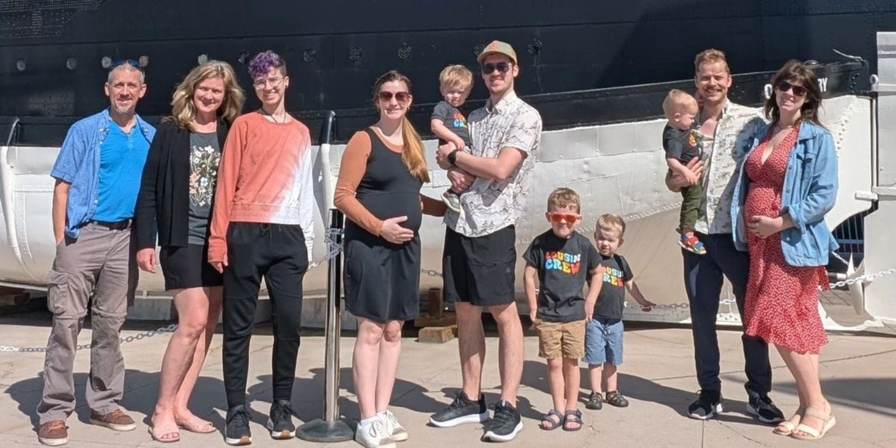
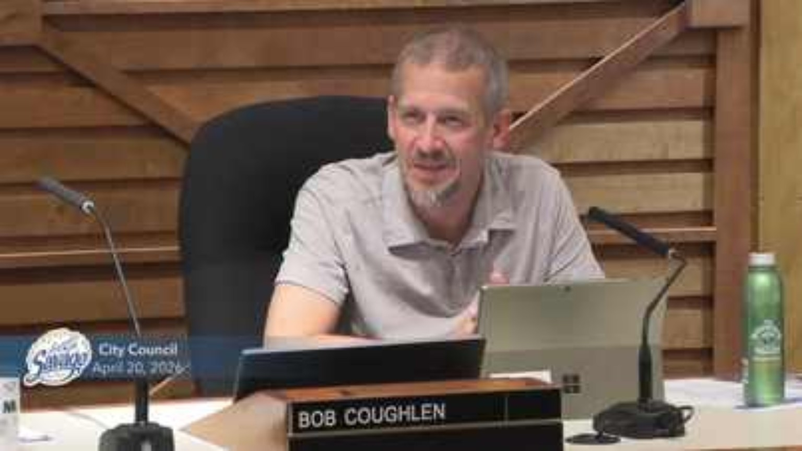
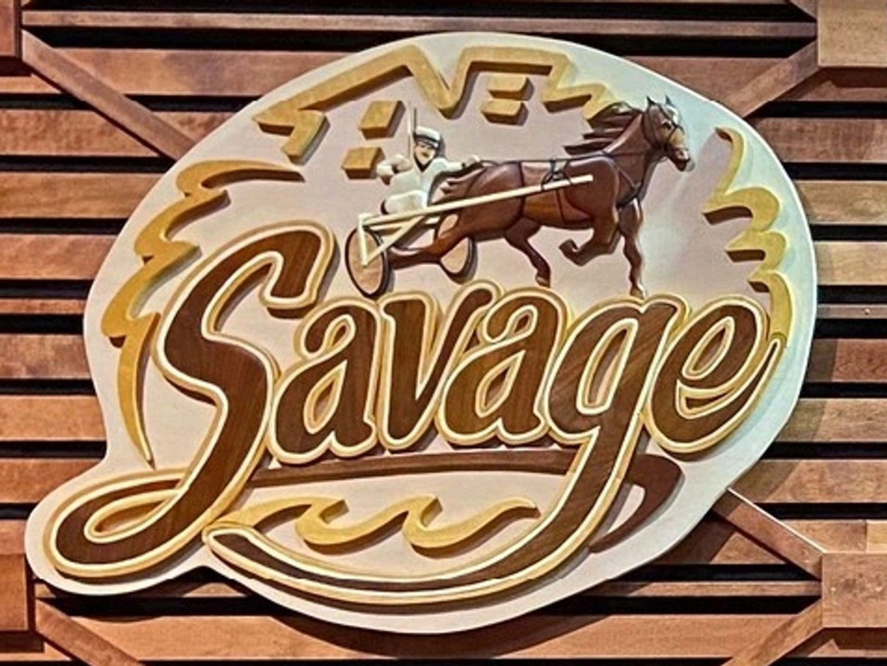

Experience Leadership Service
Working for Savage. Ready for Scott County.
For more than 20 years, Bob Coughlen has served Savage through City Council, Planning Commission, regional transportation leadership, business ownership, military service, and community involvement.

Meet Bob
Experience matters. Family matters. Savage matters.
Bob and Cindy have called Savage home since 1998. They have been married for 33 years, raised three children, and welcomed six grandchildren.
check_circleSavage resident since 1998
check_circle9 years on City Council
check_circle11 years on Planning Commission
check_circleSmall business owner
check_circleU.S. Army Reserve veteran
check_circleCommunity volunteer
Practical leadership. Not politics.
“No politics. Non-partisanship. Just doing what is right for the people we serve.”
Local government works best when leaders focus on practical solutions, responsible stewardship, and collaboration.
Scott County Priorities
Clear priorities for Savage and Scott County.
Strong Representation
A clear voice for Savage in county decision-making.
Fiscal Responsibility
Careful budgeting while protecting essential county services.
Housing
Affordable and workforce housing for today’s families and tomorrow’s workforce.
Transportation
Highway 13, regional partnerships, bus transit, long-term planning, and Dan Patch corridor consideration.
Economic Growth
A business-friendly environment that encourages investment, jobs, and growth.
Workforce & Education
Support for SCALE, Live Learn Earn, local talent, and post-secondary opportunities.
Essential Services
Public safety, veterans, health, parks, roads, libraries, social services, and environmental services.
Regional Collaboration
Working with city, state, regional, and neighboring communities.
Lifetime Experience You Can Count On
Ready to serve without the learning curve.
Public Service
- Savage City Council — 9 years
- Savage Planning Commission — 11 years
- MVTA Board Member
- Transportation Advisory Board Alternate
- HWY 169 Corridor Coalition Executive Committee
- SCALE representative and past chair
Business
- Owner, R & C Drafting
- 36 years as architectural designer
- Project manager on multi-million-dollar agricultural projects
- Budgets, operations, and long-term planning
Military
- U.S. Army Reserve veteran
- 20 years retired
- Sergeant First Class
- Psychological Operations Specialist
- Leadership and operational management
Community
- Savage Rotary Club board director
- Dan Patch Savage American Legion
- Boy Scout Leader, Cubmaster, Den Leader, and Venture Crew Advisor
- Lifelong commitment to service
Savage First
Bob understands where Savage has been and where it is going.
County decisions affect daily life, families, businesses, transportation, housing, services, and the future. Bob’s current work across levels of government gives him the opportunity to hit the ground running.
Support Bob

Events
Upcoming campaign dates.
Jun 27Saturday
Dan Patch Grand Parade
11 am – 12 pm
Downtown Savage
Jun 27Saturday
Dan Patch Days at Community Park
12 pm – 5 pm
Community Park
Aug 11Tuesday
Primary Election
All day
Vote for Bob.
Nov 3Tuesday
General Election
All day
Vote for Bob again.
Support Bob Coughlen for Scott County Commissioner.
Contribute, volunteer, request a yard sign, or share what matters most to you in Savage.
Contact Bob
What is important to you?
Voice your opinion. Ask Bob anything. Share the needs of Savage or volunteer to support the campaign.